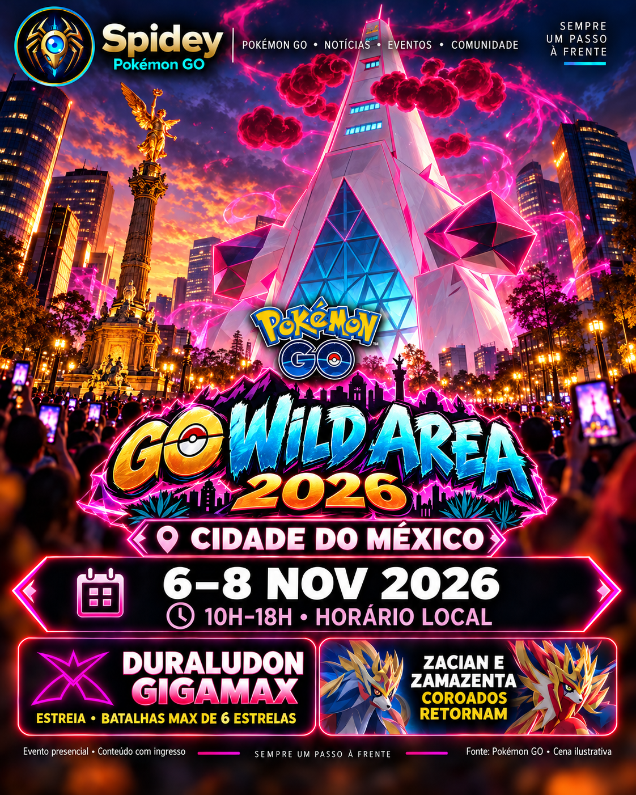

Aço e Dragão
Resgate durante sua sessão principal. O anúncio confirma duas medalhas temáticas e um encontro com Duraludon Gigamax com Fundo de Localização ao concluir a história.
As tarefas individuais ainda não foram detalhadas oficialmente.POKÉMON GO · EVENTOS E AVENTURAS
Seu universo está sendo preparado
A agenda recebe novidades automaticamente.
Abra o Spidey e veja primeiro o que está acontecendo, o que ainda tem hoje e os principais eventos dos próximos dias.
Eventos presenciais, com informações para conferir o local antes de participar.
Uma cidade inteira em jogo. Pesquisas, Safari Balls, Pokémon, ingressos e os 7 Selos — tudo para você se preparar.

Três formatos diferentes. Alguns dependem do ingresso e da data escolhida.
Resgate durante sua sessão principal. O anúncio confirma duas medalhas temáticas e um encontro com Duraludon Gigamax com Fundo de Localização ao concluir a história.
As tarefas individuais ainda não foram detalhadas oficialmente.Pesquisas dos tipos Aço e Dragão avançam ao girar Poképaradas temáticas. O adicional Dia Extra oferece novas oportunidades para ambas.
Conclua e resgate tudo até 20h locais (23h Brasília) do dia válido.Maior chance de encontrar pesquisas de campo temáticas, com Pokémon como possíveis recompensas.
Lista exata de tarefas e encontros não anunciada; não há etapas inventadas aqui.Um dos itens mais importantes para capturar Pokémon poderosos.
As Bolas Safári GO aumentam muito a chance de captura dos Pokémon poderosos, que são mais difíceis de pegar. Não garantem a captura.
Aparições oficialmente anunciadas; encontro brilhante não é garantido.
Duraludon Gigamax estreia em Batalhas Max de 6 estrelas. Dialga Dinamax e Palkia Dinamax também estreiam.
Reides de 5★: Zacian Espada Coroada e Zamazenta Escudo Coroado. Reides de 3★: Machamp com jaqueta moderna.
Sliggoo de Hisui estreia na natureza. Pokémon poderosos, inclusive Hawlucha na Cidade do México, podem aparecer. Latias e Latios poderosos podem surgir com Incenso comum.
Horas alternadas: Solid as Steel e Daring as Dragons. Ovos de 10 km podem conter Honedge, Klefki, Drampa e Duraludon.
Chance maior de Shiny, até 10 Passes de Reide diários, ½ distância para Ovos incubados durante o evento, 2× Doces de captura, Módulos Atrair e Incenso por 2 horas, Jogo em Grupo por 8 horas e mais Partículas Max. No dia do ingresso, até 6 Trocas Especiais e metade da Poeira Estelar nas trocas.
Sete Poképaradas em lugares conhecidos da cidade, em qualquer ordem.
Rally das 10h às 20h na Cidade do México, apenas no dia principal do ingresso. O adicional Dia Extra não dá outro Rally.
O Spidey já reúne referências dos locais na aba Selos. Elas não são coordenadas exatas verificadas de Poképaradas e não geram GPX.
Preços em pesos mexicanos; taxas podem ser cobradas à parte.
Um dia selecionado: 6, 7 ou 8/11, com jogabilidade presencial na região metropolitana.
Até 18 Passes de Reide por dia, XP adicional em reides, 2× XP das Batalhas Max e Doces extras.
¼ da distância dos Ovos, 3× XP, Doces e Poeira Estelar ao chocar. A distância não se acumula com bônus similares.
Mais um dia de jogo, mas sem outra Pesquisa Especial principal nem outra Caça aos Selos.
O evento Global de 14 e 15/11 é separado. O ingresso presencial da Cidade do México não inclui automaticamente o Global.
Veja os eventos por dia, confira os horários e escolha o que quer jogar.
Escolha sua coleção, marque os selos e acompanhe sua próxima parada.
Compare os Pokémon, confira os golpes e escolha seu trio para a Liga de Batalha GO.
Abra uma liga para consultar os rankings.
Baseado nos rankings abertos do PvPoke ↗. A nota compara resultados de simulações; não garante vitória. Copas especiais têm regras próprias. Licença MIT ↗
Encontre Giovanni, os líderes e os recrutas. Toque em um adversário para ver os três possíveis Pokémon, quais posições podem dar resgate e como se preparar para a batalha.
O elenco muda. Veja sempre a data da fonte; não mostramos aparições ou capturas simuladas.
Abra o guia para consultar a escalação.
Dados factuais: Leek Duck ↗, com integração comunitária atribuída. O Spidey mantém uma cópia textual validada e não usa imagens do site original.
✦ Brilhante possível segundo a fonte, nunca garantido. “Resgate possível” indica posição elegível, mas a recompensa pode variar. Fraquezas por tipo são dicas gerais; tipos secundários podem mudar a estratégia.
Revisão automática programada quatro vezes por dia, sem anúncios inventados. Se a verificação externa falhar, a última lista aprovada permanece identificada com sua data.
Você pode consultar eventos, selos e PvP sem criar conta.
A aparência, o progresso dos selos e os times de PvP ficam no armazenamento deste navegador. O Spidey não envia essas escolhas ao servidor. Você pode limpar o time no PvP ou remover os dados do site nas configurações do navegador.
Ao permitir e ativar os alertas, o Spidey guarda uma assinatura técnica: endereço de entrega, chaves de criptografia e datas de cadastro e teste. Isso permite enviar os avisos para este aparelho. Não enviamos idioma nem fuso do aparelho. Em “Desativar alertas”, removemos a assinatura do servidor.
Registros técnicos de envio evitam avisos duplicados e não guardam nomes, buscas, conversas ou o conteúdo do seu aparelho.
O Spidey não pede GPS, câmera, microfone, contatos, nome ou e-mail. Não instalamos anúncios, rastreadores de comportamento nem ferramentas de análise de visitantes. Os rankings e a maioria das imagens são servidos pelo Spidey. Ao abrir Selos, imagens das PokéLids (local.pokemon.jp) e dos selos Pokémon Center (serebii.net) podem ser carregadas desses sites; eles recebem dados técnicos da conexão. O Spidey não envia suas buscas nem progresso dos selos a esses sites.
O serviço de hospedagem recebe dados técnicos da conexão, como IP e registros de acesso. O serviço de notificações do navegador também participa da entrega dos alertas. Por isso, seria incorreto dizer que nenhum dado técnico é tratado.
Ao tocar em links de mapas, fontes ou no simulador do PvPoke, você abre outro site, sujeito às regras de privacidade dele. O Spidey não envia suas buscas ou seu time a esses sites automaticamente.